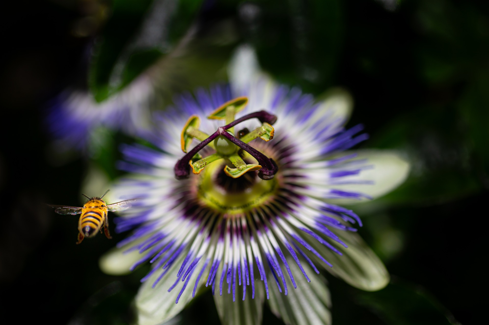

Este espacio es para noticias

Nos encanta la naturaleza Por aqui dejare imagenes que yo he capturado en mi camino por este bello mundo.
Nos encanta la naturaleza Por aqui dejare imagenes que yo he capturado en mi camino por este bello mundo.
Vacio
News